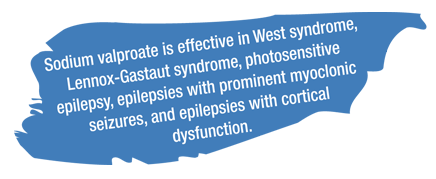

Sodium valproate: A gold standard for the treament of childhood epilepsy
by medeka healthcare on october 01, 2013
Sodium valproate is effective in epilepsy syndromes including West syndrome, Lennox-Gestaut syndrome, photosensitive epilepsy, and prominent myoclonic seizures–febrile seizures and status epilepticus. Its efficacy is comparable to carbamazepine, phenytoin, and phenobarbital in focal epilepsy and ethosuximide in absence epilepsy. It has low potential for seizure worsening when compared to other AEDs.2
Sodium valproate is effective in rare syndromes or seizure types such as infantile spasm, atypical absence seizures (commonly seen in Lennox-Gastaut syndrome), febrile seizures, myoclonic or myoclonic astatic seizures, and nonconvulsive SE.2
- Sodium valproate has been found to be effective in West syndrome, both at low (20 mg/kg/ day)3 and high dosages (50–100 mg/kg/day).4,5 A recent study also has reported that sodium valproate was effective in 39.5% of patients with West syndrome.7
- Seizure-free rates for sodium valproate are 20–45%, but in one study 16 out of 20 (80%) patients had total seizure control with sodium valproate monotherapy.2, 5
- Its efficacy is comparable to corticosteroids in spasm as well as hypsarrhythmic electroencephalogram (EEG).6
- For children resistant to corticotrophin and vigabatrin, sodium valproate is a good option for the treatment of infantile spasm.2
- Henriksen et al. have reported that sodium valproate monotherapy was efficacious in 18% of patients with Lennox-Gastaut syndrome.8
- Sodium valproate can be safely used in patients who have had a liver transplant and require strict control of hepatic function.9
- The combination of sodium valproate and lamotrigine or low dose topiramate (maximum 200 mg/day) is a good option for the treatment of Lennox-Gastaut syndrome.2
- Patients with prominent myoclonic seizures respond well to sodium valproate monotherapy or combination of sodium valproate and ethosuximide.10,11
- Sodium valproate has been observed to be effective in 85% of patients with photosensitive epilepsy.12
- Sodium valproate produces cognition enhancing effects and decreases electrographic discharges.13
- Administration of sodium valproate and benzodiazepine is also effective in reducing EEG discharges in cognitive epilepsies.14 
- Mamelle et al. compared sodium valproate and phenobarbital in the prevention of relapse of febrile convulsions. The study findings revealed that sodium valproate was more effective than phenobarbital (96% vs. 81%).15
- Sodium valproate can be preferred over phenobarbital because of its favorable safety profile.16
- Sodium valproate IV has several advantages when
used in the management of SE:2
- Sodium valproate IV doesn’t produce hypotension or respiratory depression and this may be helpful as it may avoid the need for intubation.
- Sodium valproate IV can be safely infused over a 30-minute duration.
- Sodium valproate IV achieves therapeutic concentrations quickly.
- In a recent randomized controlled trial, sodium valproate IV showed better efficacy in terms of seizure termination (p=0.189) and less adverse events (p<0.001) as compared to phenobarbital (Figure 1).17
Worsening of seizures occur commonly in children. It may occur spontaneously or may be caused due to adverse reactions to AEDs or their overdosage. Sodium valproate induced seizure worsening is rare when compared to other AEDs such as carbamazepine, phenytoin, phenobarbital, benzodiazepines, vigabatrin, gabapentin, and lamotrigine.2


Contents
- Initial monotherapy with levetiracetam fails more frequently than monotherapy with valproate or oxcarbazepine:An enlightening evidence
- Sodium valproate:A gold standard for the treatment of childhood epilepsy
- Superior efficacy of sodium valproate IV reported in acute seizures and status epilepticus
- Clobazam: An effective long-term treatment option for Lennox-Gastaut syndrome
- Hospital coverage:Krishna Institute of Medical Sciences
- Oxcarbazepine:A valuable treatment option for partial-onset seizures in children
- Pregabalin and methylcobalamin combination for neuropathic pain:The Indian scenario
- Important aspects of epilepsy management:during pregnancy
- Neurology News
- Neurology Quiz
News Digest

ECG should be considered in patients with refractory epilepsy
Analysis of electrocardiogram (ECG) monitoring in patients with refractory epilepsy revealed significant differences in heart rate between ictal and pre-ictal states, between ictal and post-ictal states, and between pre- and post-ictal states. Hence, ECG might be helpful to detect serious cardiac abnormalities in patients with refractory epilepsy.
J Res Med Sci. 2013;18(Suppl 1):S32–4.

Use of gabapentin in pregnancy is not associated with increased risk of major malformations
A prospective study of pregnancy outcomes in 223 pregnant women who were exposed to gabapentin and 223 pregnant women who were unexposed to gabapentin reported that gabapentin use in pregnancy was not associated with increased risk for major malformations.
Epilepsy Behav. 2013;26(1):109–13.

A portable automatic device for the detection of generalized tonicclonic seizures
Increased S100B protein levels in cerebrospinal fluid may be associated with the neuronal damage following central nervous infections.
Epilepsia. 2013;54(4):e58–61.
Updates